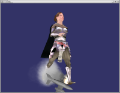
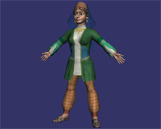
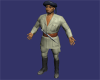
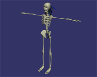
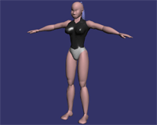

osgCal2
News?
May 4, 2007
osgCal2 0.3.0 preliminary version availble!
Use:
svn co https://osgcal.svn.sourceforge.net/svnroot/osgcal/trunk/osgCal osgCal
to get the sources. And:
svn co https://osgcal.svn.sourceforge.net/svnroot/osgcal/trunk/models models
to get the test models.
Then:
make
make install
You'll get the library + osgCalViewer, which can be used to view
models, meshes and animations.
I hope it will work :)
Some preliminary version features:
- Works under OSG 1.9.x.
- Uses GLSL hardware skinning, yet supporting OSG picking.
- Can be swiched to fixed function implementation.
- Supports normal mapped, two-sided & transparent meshes.
- Uses different shaders (with minimum of instructions) for different
materials.
- Calculates deformations only when bone positions are changed.
- Uses non-skinning shader for fast drawing of non-deformed meshes.
June 1, 2005
osgCal2 0.2.1 released! The previous file was
wrong, use this new version. I forgot also to mention that it has Jan
Ciger's changes, to improve rendering code and state management.
June 1, 2005
osgCal2 0.2.0 released! Download it
here.
It's ported to OSG 0.9.9 and Cal3D 0.10.0. Other changes include:
- Fixed the problem with flip textures.
- Fixed initial time values for the animations.
- Fixed problem with the new empty constructor of Model class.
- New method to load animations and associate one name to save and
recover them later.
- New code for read/write animations with its name associated.
- Fixed the problem of locate textures in the correct path, now the .osg
model can find them.
March 30, 2005: New status
There are currently two active
branches of this project. One of them is the one that was always at this
page, it's LGPL as always, and it will remain the same. There is another
branch, maintained by Loic Dachary, licensed under GPL, with changes that
his group have made. Their policy is to release their changes under GPL and
I respect this, but as this conflicts with my own policy for the project,
both branches will be developed independently.
A new version of the (LGPL) sources will be uploaded to the SourceForge CVS as soon
as possible with many improvements and synced with OSG 0.9.8.
You can access the GPL version at 'Gna!', and their
stable versions are published at the download area
of Gna!
To minimize confussions, we will refer to the GPL version as osgCal, and to
the LGPL version as osgCal2, as the GPL one is already in Debian with this
name.
The SF.net CVS repository is reactivated and has the latest patches from
Jose A. Iglesias.
April 27, 2003
CVS moved to sourceforge
April 20, 2003
Version 0.1.2 & 0.1.3: Alberto Farre ported it to Windows, and
added some VisualStudio project files. He also enhaced the sample to cicle
between animations with the 'm' key. Keep present that not all the
animations are thinked for looping although they are all played as loops, so
some of them can do extrange things...
April 19, 2003
Version 0.1.1: Ported to osgProducer and cleaned up the example.
April 19, 2003
Version 0.1: I've fixed some bugs found by Robert both in the
library and in the data. Download the new files, please.
What is it?
osgCal is an adapter for using cal3d inside OpenSceneGraph.
Cal3D is a character animation library based on skeletons and bones.
Where to download?
- Here is the latest release.
Some screenshots?
Yes, here you can see the cal3d paladin walking on top of an smoking
cessnafire:

And here are some screenshots from Version 0.3.0 currently under development:




{kind=link}
{kind=link}
{kind=link}
{kind=link}